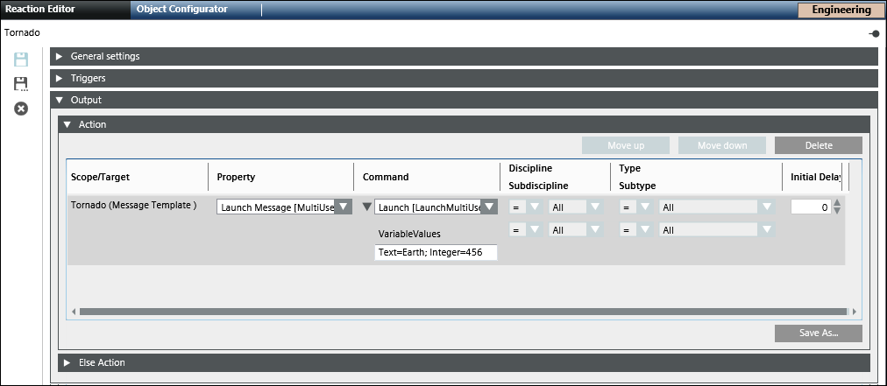
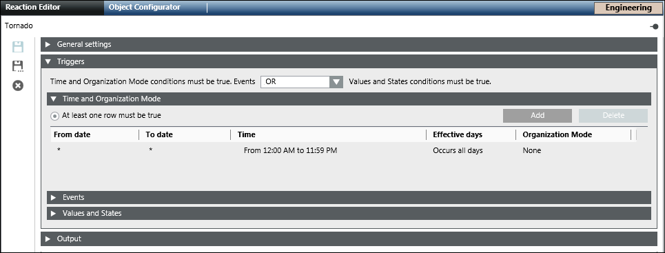

Launch Messages
This section describes procedures for launching messages.
Launch Message using Command
- The message template which you want to launch is created and configured.
- Select Applications > Notification > Notification Templates.
- Select the configured message template to be launched.
NOTE: The message template may contain system variables, event variables or user variables. - In Extended Operation tab, navigate to the Launch Message command and perform either of the following to launch the message.
NOTE: At one time, only one Launch Message command is available. - If the selected message template does not contain a user variable, click Launch.
- If the selected message template contains a user variable, enter the variable text in the Variable Value field. Click Launch to launch the message template. The variable text is used to populate all user variables present in the selected template during the launch message operation.
- The selected message template is launched under a new ad-hoc incident.
Launch Message using Reaction
- The message template which you want to launch is created and configured.
- Select Applications > Logics > Reactions.
- The Reaction Editor tab displays.
- Open the Output expander and thereafter open the Action expander.
- From the System Browser, navigate to Applications > Notification > Notification Templates.
- Drag a Message template, for example, Fire trigger, to the Action expander.

- From the Property drop-down list, select any of the following to launch the message:
- Select Launch Message [NoUserVariableCommand], to launch the message without any user variable value.
- Select Launch Message [SingleUserVariableCommand], to launch the message with a user variable value.
NOTE: For a single variable user value, enter the variable value in the Variable Value field. The variable value entered is used to fill all user variables present in the selected template during the launch operation. This indicates that the values of all user variables will be replaced by same value entered in the Variable Value field. If the provided variable value is not compatible with the type of a given user variable, then the value of the affected user variable will be filled with the default value of the variable and will not be replaced with the entered text. - Select Launch Message [MultiUserVariableCommand], to launch the message with a multi user variable value
NOTE 1: For multi user variable value, enter the values as a series of key-value pairs in the following format:
[User Variable Name]=[Value]; [User Variable Name]=[Value];…
NOTE 2: For multi select user variables, enter the variable values separated by a comma and a space after the comma. For example, List=0, 1, 2. - In the Triggers expander, specify if the conditions specified in both, the Events as well as Values and States, expanders must be true or if the conditions specified in either of the expanders must be true by selecting the appropriate operator (AND, OR) in the drop-down list.
- Open the Time and Organization Mode expander.
- Click New to add a new row and specify a new time or schedule, when you want to trigger the Launch message command.

- Click Save As
 and enter a name and description for the reaction in the Save As dialog box.
and enter a name and description for the reaction in the Save As dialog box.